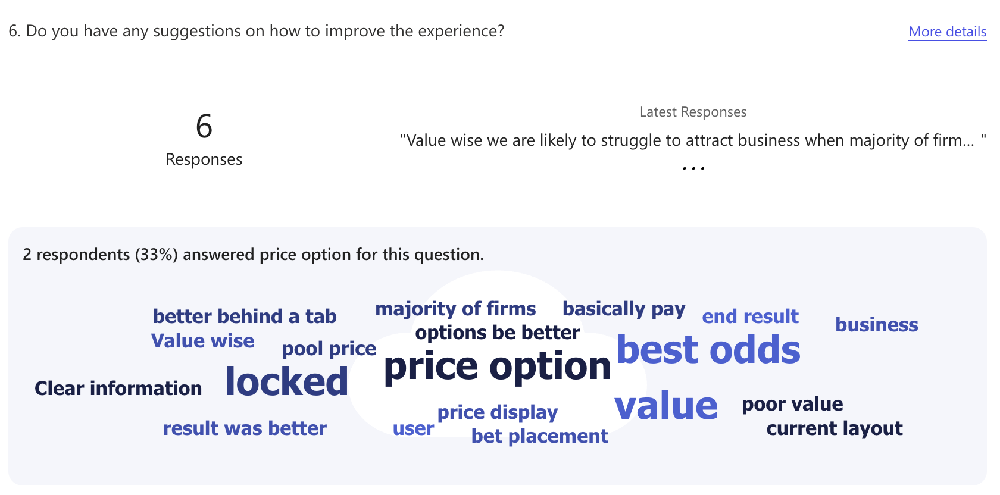
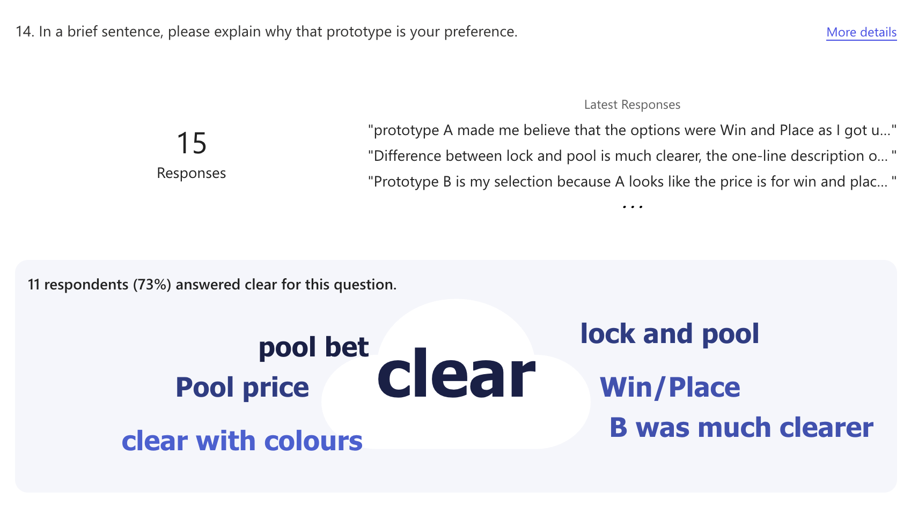

Core Competencies
Five examples of how I've demonstrated Communication, Problem Solving, Creativity, Mindset, and Teamwork & Leadership — structured using the STAR technique and drawn from my work at the Tote.
01 — Case Study: Lock In Your Price
Communication
I was the Lead Designer on the strategic FY26 initiative: Lock In Your Price — offering customers a fixed price when they placed a bet, something that has never been offered before on a pools platform. Due to the importance of the initiative to the business, stakeholders across the organisation, including at C-suite level, were keen to have their input and be kept updated on design decisions and research findings.
Keep senior stakeholders meaningfully involved and informed throughout a complex, long-running project — without letting diary constraints slow down design decisions or block iteration.
I adapted my communication approach across three areas to meet stakeholders where they were, rather than expecting them to come to me.
1. Recorded design walkthroughs
During the ideation phase I needed design input from senior stakeholders, including C-suite, but finding time in their diaries was a persistent obstacle. My solution was to record short Loom walkthroughs of the designs, so stakeholders could review and comment in their own time without a meeting being the bottleneck.
2. Internal surveys & Lunch & Learn
To gather broader feedback on designs and build buy-in from across the business, I created internal surveys distributed to stakeholders and presented during a Lunch & Learn session. From experience, stakeholders give more insightful feedback when they have a prototype in their hands rather than passively viewing static images in Figma or a slide deck — so the surveys were designed around interactive prototypes where possible.


3. Evolving how I played back research
I presented comprehensive user research from customer interviews conducted on a working prototype. Early playbacks relied on a PowerPoint with video clips embedded — effective but dense. Over the course of the project I evolved this approach, using Claude to build a dedicated research summary webpage. The result was that headline findings became far more digestible for senior stakeholders, who subsequently asked to use the presentation when reporting back to the board.
The biggest result of my approach to communication was creating an environment where feedback was consistently attainable, despite senior stakeholders' competing responsibilities. Ideas flowed quickly, which meant designs could be validated and iterated on without being blocked by calendar availability. Senior stakeholders adopted the research presentation format for their board reporting — a signal that the communication had moved from informative to genuinely useful.
02 — Case Study: Navigation
Problem Solving
Quarterly surveys were flagging navigation as a persistent pain point. When I dug into the data and interview clips from other projects, I found the root cause: clicking a single-leg bet type (Win/Place) in the dropdown automatically navigated customers to the next chronological race, including international meetings. Customers who primarily bet on domestic racing were regularly landing on races they had no interest in — a frustrating, disorienting experience. The complication was that the Tote sportsbook is a third-party integration, which limited what could be done with the navigation structure.
Design a new navigation experience that gave customers control over where they landed, increase visibility of key areas like the sportsbook, and validate the solution with data — all within the constraints of the third-party integration.
I used competitor analysis to identify that left-hand navigation panels
were industry standard and that competitors expected customers to navigate
to specific races via racecards — not through a bet-type dropdown. This
gave me the rationale to remove the problematic Win/Place
bet type from the dropdown entirely, resolving the root cause of
the wrong-landing issue in a single decision.
For the third-party sportsbook problem, I reframed it as an opportunity:
rather than trying to integrate the sportsbook natively, I proposed
surfacing CMS-managed links to featured sports events in the left panel.
I collaborated with the Operations team on the content strategy
(football and in-play as permanent fixtures with flexibility to add
events) and worked with BI to build an A/B test using LaunchDarkly,
comparing active win bettors against a control group before full rollout.
The A/B test showed a 6.48% uplift in bet conversion with no adverse impact on bet volume, giving us confidence to roll out fully. The left panel also unlocked a scalable operations capability that continues to drive traffic. The learning: finding the root cause of a problem — rather than designing around the symptom — produced a simpler, more impactful solution than expected.
03 — Case Study: Multiples
Creativity
Customers wanted to place multiples bets (doubles, trebles, four-folds) on the Tote, but pools betting has a fundamental constraint that no operator in the world had solved: the combined price cannot be calculated upfront. In fixed-odds betting the return is locked the moment you bet. In pools betting the dividend fluctuates with the size of the pool right up until the race goes off. Every other pools provider globally — including TAB in Australia and PMU in France — had simply not offered multiples as a result.
Design a multiples experience that was compelling and transparent for customers, without the ability to guarantee a fixed return — a challenge that had never been designed for in pools betting before.
I invented a new concept for pools betting: Potential Returns
— a live indicative value shown to the customer at bet placement, with
language that communicated it was not a guaranteed figure. Crucially, I
treated this not just as a label choice but as a hypothesis to test.
Customer testing confirmed the wording worked exactly as intended.
Alongside this, I redesigned the betslip from the ground up using a
card-based layout. Previously, multiple selections and bet types were
displayed in a flat, confusing list. The card format gave each bet a
shared common region — making it immediately clear which stake, return,
and bet type belonged together, regardless of how many selections a
customer added.
When the typography licence for the Tote's existing font expired mid-project,
I used the moment creatively: researching accessible, cost-effective Google
Fonts and aligning marketing and branding on the new choice, turning an
operational problem into a design system improvement.
The UK Tote became the only pools betting operator in the world to offer multiples win bets. The redesigned betslip solved the cognitive overload of the previous layout while introducing a returns concept that is itself an innovation in pools betting globally. The initiative met budget expectations in its first year.
04 — Case Study: Exotic Cross-Sell
Mindset
Research — gathered from surveys, interviews, and competitor analysis — identified that customers weren't placing exacta and trifecta bets on the Tote, not because they didn't want to, but because they didn't know those products existed. The Tote's naming conventions (exacta, trifecta) differed from industry-standard terms (forecast, tricast), creating an invisible barrier. The ideal solution included surfacing live "will-pay" values to demonstrate the value proposition — but the backend resource to support this wasn't available within the project timeline.
Deliver a meaningful increase in exacta and trifecta bets despite the technical constraint — without stalling or waiting for the full ideal solution to become available.
Rather than treating the resource constraint as a blocker, I reframed
the problem: the data showed that awareness and education were the
primary barriers — not the absence of will-pay data. I worked closely
with engineering to split the initiative into two phased deliverables,
prioritising the cross-sell component that addressed the highest-impact
issues immediately.
I also adapted the design itself to work within constraints. The original
plan required Ops to manually curate horse combinations — which needed
resource that wasn't available. I redesigned the logic to automate
selection based on the top of the market, removing the dependency
without compromising the customer experience.
To validate the approach before full rollout, I conducted usability
testing through Usertesting.com and internal sessions, and built a
business case with the PM that I presented to SLT to secure buy-in.
I also ran an A/B test to ensure the new component wouldn't cannibalise
win bet volume.
The A/B test showed no adverse impact on win bets, and an uplift in exacta volume. By shipping a constrained but impactful version quickly, I created measurable business value and a proof of concept for future pre-populated bet features. The learning: a growth mindset means asking "what can we deliver now that genuinely helps?" rather than waiting for the perfect conditions.
05 — Case Study: Multiples
Teamwork & Leadership
Multiples was the key strategic initiative for FY2024 — a world-first feature that touched every part of the business: UX Design, Product, Engineering, SLT, ExCo, Business Intelligence, Business Planning, Marketing, Branding, and the Head of Racing. Midway through the project, the backend services had to be rewritten, which changed the delivery scope and threatened the timeline. At the same time, the existing design system was fragmented and inconsistent across platforms, which was slowing down developer builds and creating quality issues.
As Lead Designer, lead the end-to-end design and research process while keeping all stakeholders aligned across a large, cross-functional group — and adapt quickly when the technical delivery plan changed beneath us.
I invested early in building a strong working relationship with the PM
and engineers, which meant we were able to pivot quickly and without
conflict when the backend resource changed. Rather than waiting for a
single final handover, I structured the Figma files into three clearly
separated pages — one per delivery version — so developers always had
a precise, unambiguous source of truth for whichever stage was in build.
To build stakeholder confidence in the direction, I created user journey
maps and personas from my research and presented these to SLT to
demonstrate the financial and retention impact of not solving the
problem. I used the research I had gathered to convince stakeholders on
the "Potential Returns" decision — a critical design call they had
initially blocked.
Recognising a wider team problem, I took the initiative to consolidate
the fragmented design system into a single source-of-truth file. I ran
sessions with developers to walk them through the structure, because I
found that passive handover wasn't sufficient — developers needed to be
guided into using the system. When the existing font licence expired,
I led the cross-team alignment with Marketing and Branding on the
replacement — turning an operational issue into a moment of shared
ownership.
Despite mid-project technical changes, the feature shipped on plan and met budget expectations. The structured Figma handover improved build accuracy, and the design system sessions reduced inconsistency across the team. The learning: leading cross-functional work means creating the conditions for other people to move quickly — through clear documentation, genuine relationships, and proactive communication — not just delivering your own part.